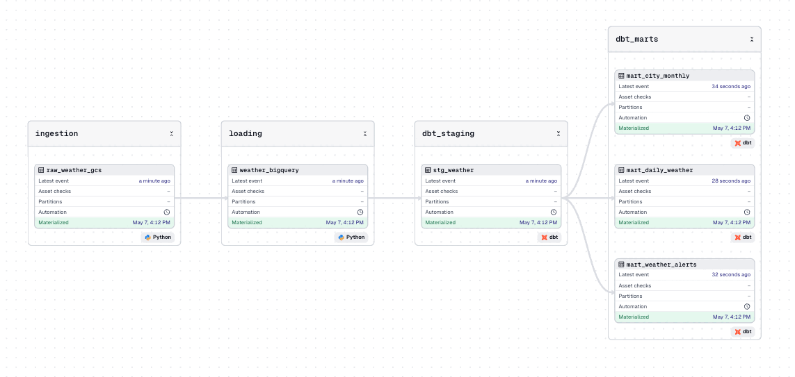

Project 01
Retail Weather Pipeline
A multi-city retailer wants to know how weather moves demand, so planners can stock up before a heat wave or a storm. This pipeline pulls the weather, models it, and feeds a dashboard.
GitHub repo Live dashboard Write-up on LinkedIn

The Dagster asset graph, from the API call to the dbt marts.
How it works
Every morning at 06:00 UTC, Dagster pulls daily weather for New York, Chicago, Los Angeles, Houston and Seattle from the free Open-Meteo Archive API. Each city lands as a raw JSON file in Cloud Storage, then a loader flattens it to one row per date in BigQuery.
dbt takes it from there: a staging view deduplicates on city and date, and three marts sit on top of it for daily weather, monthly city summaries, and weather alerts that score high-impact retail days from 0 to 4.
Decisions worth explaining
I defined the Dagster assets by hand instead of using the dbt decorator, so the Python steps before dbt show up in lineage. A custom schema-name macro sends models straight to the staging and marts datasets. And there's one table with city as a column, not a table per city.